← lab notebook · working results · updated October 15, 2026
Learning the seams between plasma models: results
The working record behind the RISE proposal (Sironi × Zhu). Two seams: kinetic → fluid in collisionless astrophysical turbulence and core ↔ edge in a tokamak. Every number is a physical quantity scored against the expensive model on runs never used in training, unless marked "validation". Runs marked running are not results yet.
0 · The simulations behind the closures
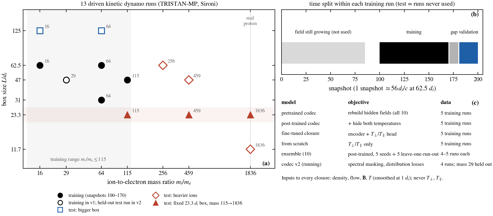
Shown(a) Thirteen driven kinetic dynamo runs (TRISTAN-MP) by ion-to-electron mass ratio and box size, with their roles. Training uses snapshots 100–170 of four or five runs. Validation = snapshots 181–200 of those runs, used for model selection. Test = runs never used: bigger boxes, heavier ions up to the real proton mass, and (in v2) the mass-29 run. (b) The time split. (c) What each model saw. Inputs to every closure are density, flow, B and temperature (smoothed at 1 di), never T⊥ or T∥.
Aim 1 · kinetic → fluid
1.1 · The kinetic plasma: a turbulent dynamo
ShownMid-plane |B| from snapshot 5 to 200 (mi/me = 64, 62.5 di box), with the box-averaged ⟨B²⟩. ResultThe field grows ~150× in energy, exponentially until snapshot ~100 (e-folding ≈ 1650 di/c). By snapshot 200 it is near saturation (0.86 of the ion kinetic energy) and still growing slowly (+40% over 180–200).ShownSnapshots 100–200, smoothed at 1 di: |B| with field direction, ion anisotropy ln(T⊥/T∥), density, vorticity. The anisotropy that the closures must supply is organized by the field structure.
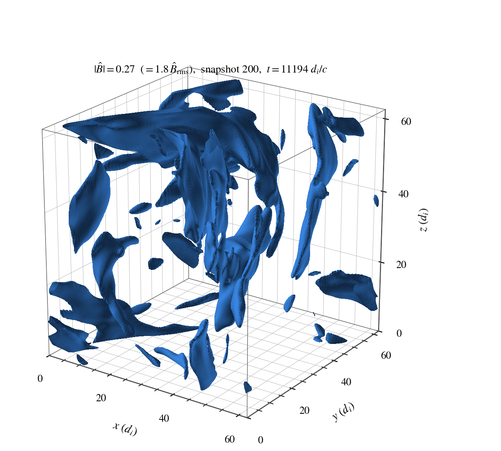
Isosurface of |B| at 1.8× rms, snapshot 200: folded flux sheets.
1.2 · What the closure must supply: anisotropy between the instability thresholds
ComparedIon pressure anisotropy ln(T⊥/T∥) on a mid-plane slice, snapshots 181–200: PIC truth vs the learned closure, the two literature rules, and MHD (none). Every closure sees only density, flow, B and temperature. Rows: a training run at validation times, an unseen 125 di box, and the real proton mass (trained only to mi/me = 115). ResultThe learned closure reproduces where the plasma is hotter across (red) or along (blue) the field, including in the unseen box. The pinned rule is patchy and has no blue; Braginskii is noise-like in the bigger box. At the real proton mass the learned closure keeps the large-scale pattern but misses the strongest firehose (blue) patch.
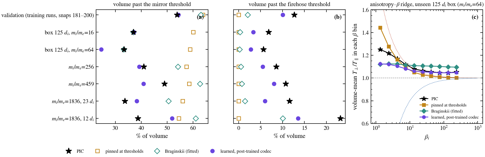
Scored(a, b) Share of the volume past the mirror and firehose thresholds: PIC (★) vs pinned rule, Braginskii, learned. (c) Mean T⊥/T∥ in β bins on the unseen 125 di box. ResultThe learned closure follows PIC's occupancy and ridge. The pinned rule overfills the mirror side and never reaches firehose. All closures under-predict the firehose tail, worst at the real proton mass (23% in PIC).
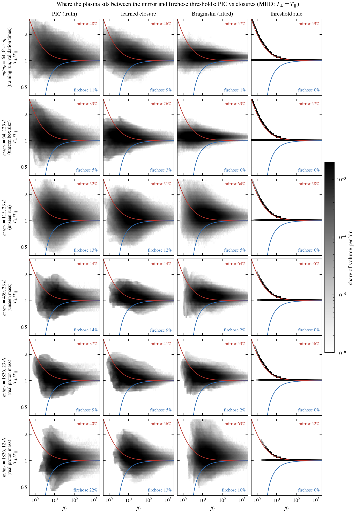
ComparedT⊥/T∥ against βi over the whole 3D volume (snapshots 181–200) for PIC and each closure on six runs, against the mirror (red) and firehose (blue) thresholds, with the share of the volume past each. MHD sits on T⊥ = T∥. ResultThe learned closure fills the same region as PIC, matching the mirror and firehose shares within a few percent at mi/me = 115, 459 and in the 23 di real-mass box. It is too narrow in the 125 di box and over-fills the mirror side in the 12 di real-mass box (56% vs 40%). Braginskii over-fills the mirror side and almost never reaches firehose; the threshold rule collapses onto two lines, the mirror threshold and T⊥ = T∥, because the fit switched off its firehose side.
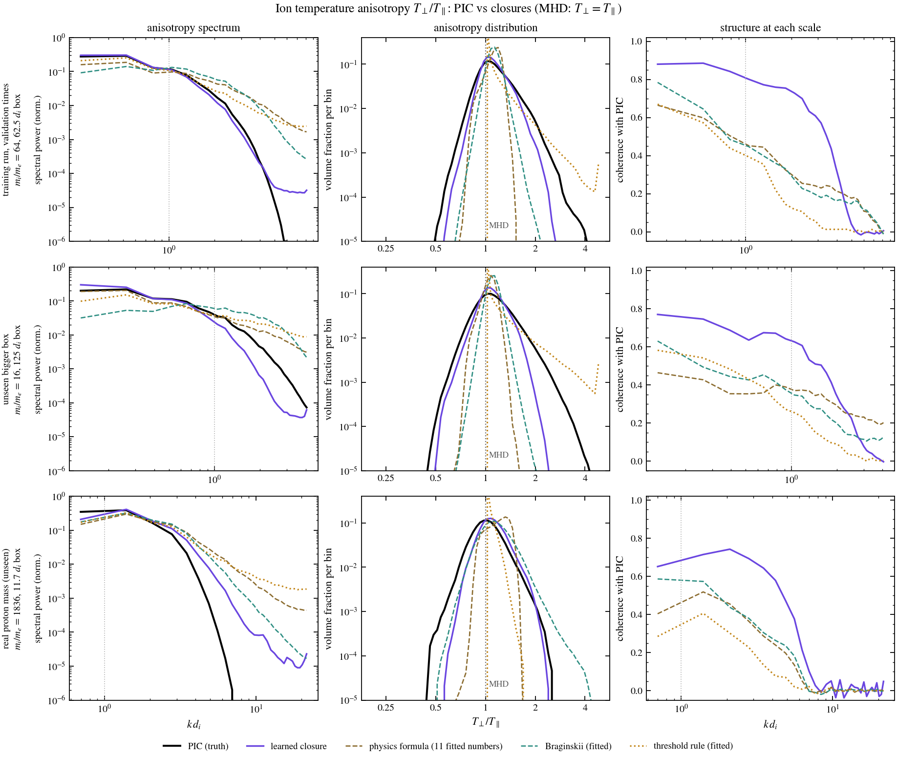
ComparedIon anisotropy T⊥/T∥ from PIC, the learned closure and three literature closures fitted to the same training runs, on a training run at validation times, an unseen 125 di box, and the real proton mass. Columns: power at each scale, the distribution over the volume, and coherence with PIC at each scale. MHD is isotropic (dotted line at 1). ResultThe learned closure keeps PIC's large-scale structure: coherence 0.65–0.88 at the largest scales, staying high to k di ≈ 2–3, against 0.3–0.8 and falling fast for the literature closures. Its distribution is the closest to PIC's, but too narrow, missing the most anisotropic tails on both sides. At the real proton mass it puts too much power at small scales, though less than the literature closures.
1.3 · What a fluid code feels: heating and force
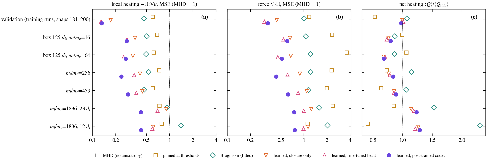
ComparedThe anisotropic heating −Π:∇u (local error and net rate) and force ∇·Π from each closure vs from the PIC pressures, relative to omitting anisotropy (MHD = 1). ResultLearned closures leave 24–29% of the heating error in bigger boxes and up to mi/me = 459, and 42–43% at the real proton mass, against 49–79% for the best literature rule. Both literature rules make the force worse than omitting anisotropy (1.1–3.6×). The net heating is underestimated by ~30% in the bigger boxes and overestimated by ~25% at the real mass.
1.4 · Transfer to heavier ions
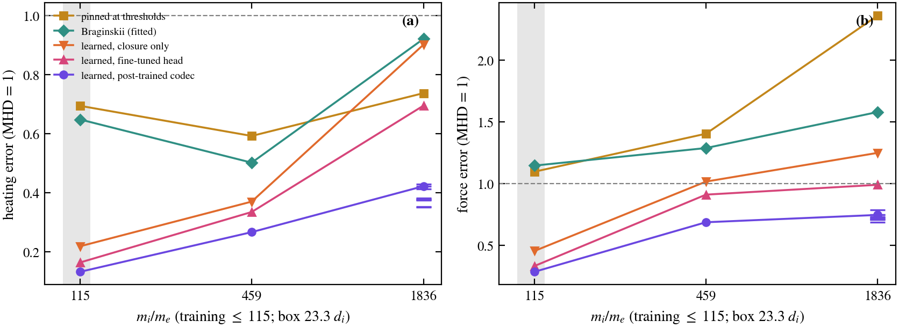
ComparedHeating and force error vs ion mass on a fixed 23.3 di box. Training stopped at 115; ticks at 1836 are ten independently retrained models. ResultThe pretrained models degrade gently (heating error 0.13 → 0.42 of MHD, ten models 0.35–0.43). The closure-only model and the Braginskii fit collapse toward MHD at the real proton mass.ComparedIon anisotropy ln T⊥/T∥ on a mid-plane slice through snapshots 181–200: PIC vs the learned closure, the pinned rule, Braginskii and MHD (no anisotropy). Rows go up in box size (62.5 → 125 di) and in ion mass (115 → 459 → 1836); only the top row's run was used in training, and at other times. ResultThe learned closure keeps PIC's pattern of mirror-side (red) and firehose-side (blue) regions in every row, including at the real proton mass. The threshold rule, as fitted, sits at the mirror threshold where field lines are stretched and is exactly isotropic (white) everywhere else: the fit set its firehose coefficient to zero; Braginskii tracks the stretching, is noisier, and has almost none of PIC's firehose-side (blue) regions.ComparedThe anisotropic heating rate Q = (p⊥−p∥)(b̂b̂:∇u − ∇·u/3) that each closure would feed a fluid code, on the same slices (orange: heating; purple: cooling). Numbers: heating error on this slice over all 20 snapshots, relative to MHD (= 1). ResultThe learned closure puts the heating where PIC does: error 0.12–0.33 below the mass where training stopped and 0.23–0.46 above it, against 0.42–1.03 for the literature rules. Both rules heat wherever the flow stretches the field, so they cannot produce PIC's cooling (purple) patches; the learned closure reproduces several of them.
1.5 · Inside a running fluid code
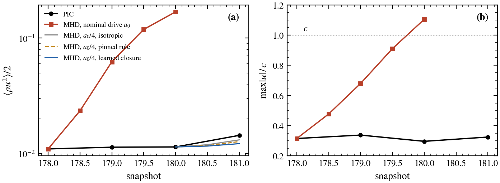
ComparedAn MHD copy of the kinetic box (same box, same stirring, started from PIC snapshot 178) vs PIC. ResultAt PIC's stirring strength MHD flows pass c in two snapshots. PIC survives only because its thermostat caps particle momenta, so the MHD stirring must be tuned to PIC's kinetic energy.
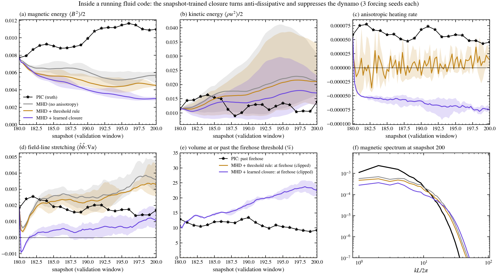
ComparedMHD started from PIC snapshot 180 of a training run and run through the validation window (180–200): without anisotropy, with the threshold rule, and with the learned closure recomputed from the evolving MHD state. The drive is calibrated once on isotropic MHD, then frozen; 3 forcing seeds each (line = mean, band = range). ResultNo fluid run keeps PIC's field growth (+42%). By snapshot 200, plain MHD has lost 19–39% of its magnetic energy, the threshold rule 40–43% and the learned closure 58–64%. In every seed, within half a snapshot the learned closure's heating turns negative (it gives energy back) and the field-line stretching that drives the dynamo collapses. It also drives 20–24% of the volume to the firehose limit, where the solver's stability clip binds (PIC: ~10% past firehose). A closure trained on PIC snapshots meets MHD states it never saw; training it inside the solver is Aim 1.
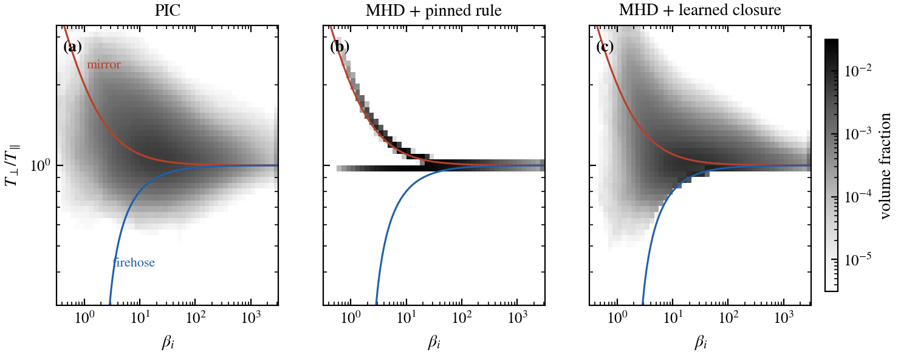
After one snapshot in the loop: the learned closure keeps PIC's spread of anisotropy; the pinned rule collapses to two lines. The sharp lower edge is the firehose clip that keeps the equations well posed.
Matched-drive rerun (fixed stirring strengths over the window, then all three closures × three stirring histories) running
Aim 2 · core ↔ edge
2.1 · The tokamak edge: TCV #85604
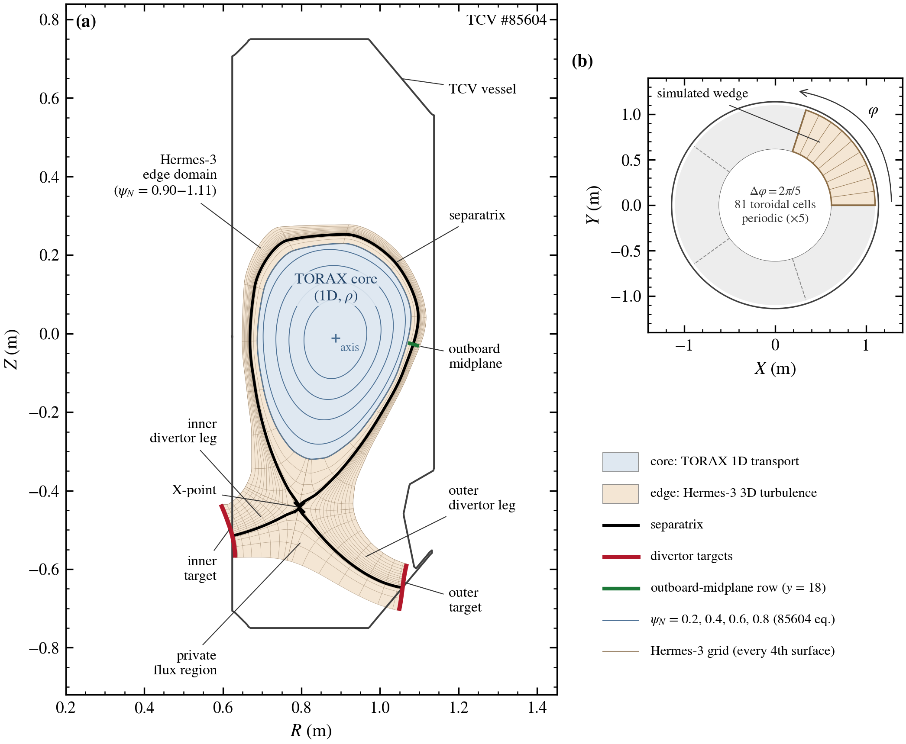
ShownThe 85604 equilibrium: TORAX simulates the core (blue, 1D in ρ); Hermes-3 simulates the 3D edge turbulence (tan, ψN = 0.90–1.11) through the separatrix to the divertor targets, on a 1/5 toroidal wedge.ShownHermes-3 edge turbulence on a poloidal cut: Te, ne and δn/⟨n⟩, 200 frames over 520 µs (reconstructed between the 32 poloidal rows along field lines).Blobs at the outboard midplane (radial × toroidal).
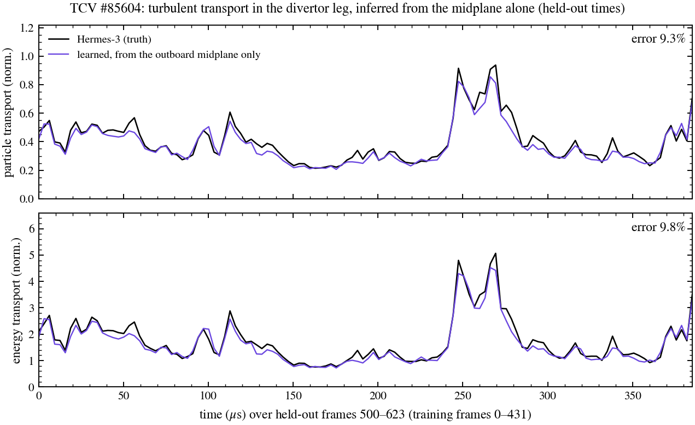
ComparedTurbulent radial particle and energy transport through the divertor-leg scoring surface: Hermes-3 vs the TCV model's inference from the outboard-midplane plane alone, each frame inferred separately, on frames 500–623 (training used 0–431). ResultError 9.3% (particles) and 9.8% (energy), with the bursts at 250–270 µs reproduced. This is radial E×B transport, not heat on the target plates; locally, face by face, the error is ~45%, so the integral is better than the parts.
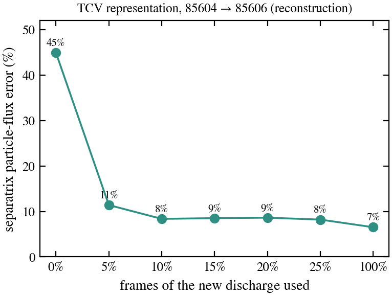
ComparedSeparatrix-integrated particle flux reconstructed by the TCV representation (pretrained on 85604) vs Hermes-3 on discharge 85606, against the fraction of 85606 frames used. Result45% → 11% with 5% of the data. This October 8 experiment adapted on 85606; from now on 85606 is reserved for the final test only.
2.2 · The seam: how TORAX and the edge connect
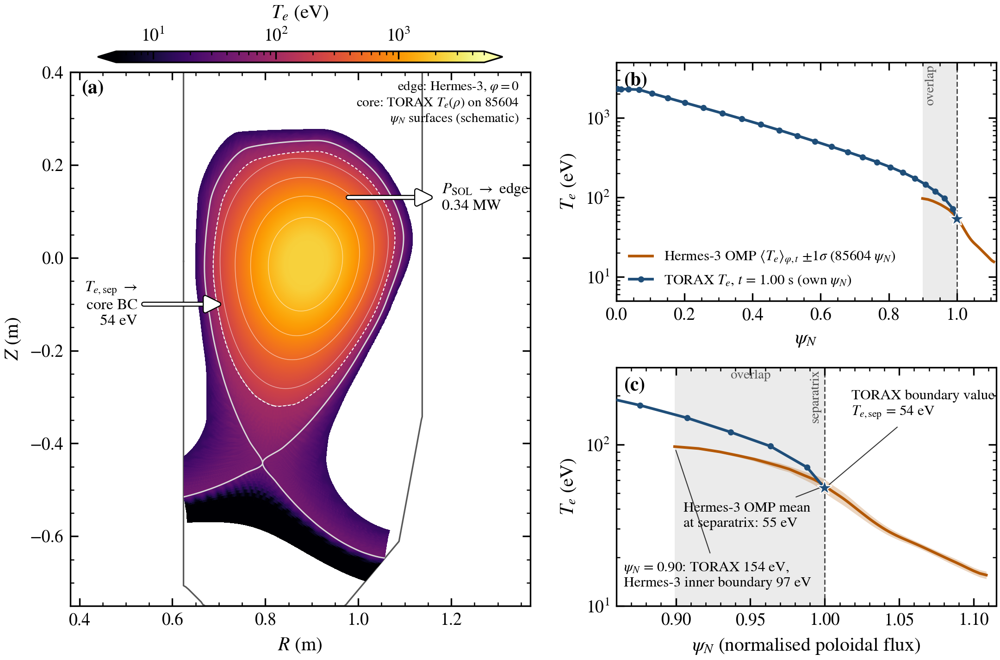
ComparedTORAX core Te(ψN) at PSOL = 0.34 MW vs Hermes-3 edge Te (85604 injects 0.30 MW). ResultThey agree at the separatrix (54 vs 55 eV) and differ 1.6× at ψN = 0.9 inside the overlap. Arrows: the planned exchange (power out of the core → edge; separatrix Te → core boundary). Not yet a coupled run.TORAX profile evolution (ms over 1 s) beside the edge turbulence (µs). The time scales differ, which is why the coupling is quasi-static.
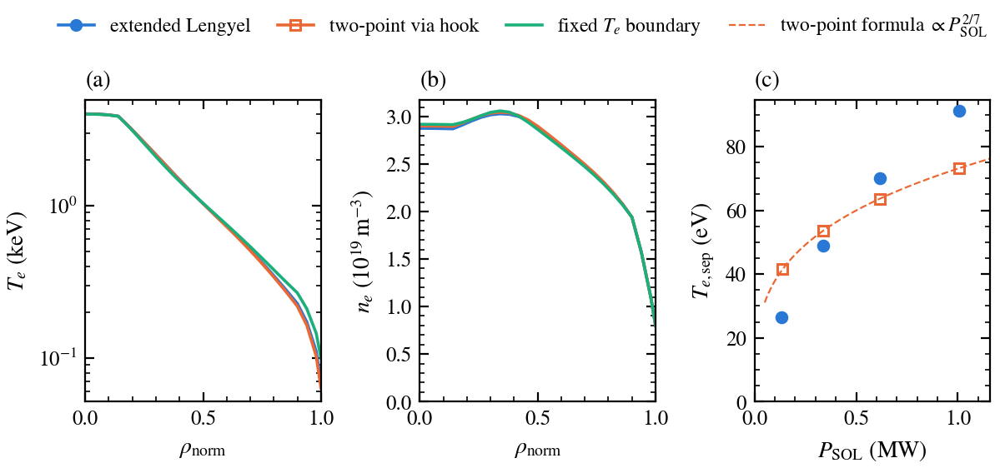
ShownTORAX's edge slot now calls an outside model each step (tested with a two-point stand-in): (a, b) core profiles with three edge choices; (c) Te,sep vs power leaving the core, Lengyel vs stand-in (∝ P2/7). Geometry: a rescaled bundled equilibrium; switching to the real 85604 equilibrium is next.
2.3 · Can the edge emulator take TORAX's input?
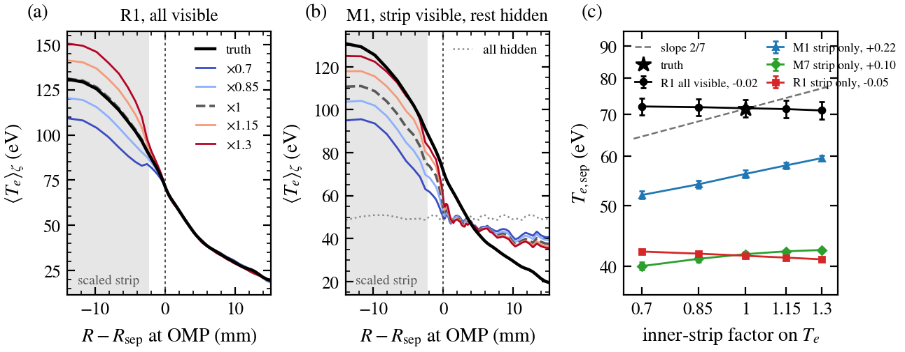
ComparedThe TCV edge model's reconstructed separatrix Te when the core-side strip is scaled 0.7–1.3×, vs Hermes-3 and the textbook 2/7 scaling. ResultNo zero-shot path: the main model ignores masked input, and masked variants respond unphysically (the far scrape-off layer cools when the core heats). The emulator must be adapted on edge runs at several core powers.
JAX-Hermes3 port of the 85604 setup (local branch, two missing terms added) — validation vs the Hermes-3 run running; then a 5-point heating scan to train the emulator's core input.
Aim 3 · knowing when it is wrong
3 · Trust: ranking works, calibration does not yet
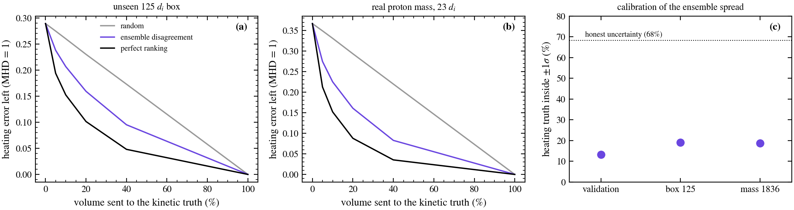
ComparedHeating error left after replacing the closure by the PIC truth in the most doubtful fraction of the volume, chosen by disagreement among ten retrained closures, at random, or by perfect ranking; and how often the truth lies within ±1σ of the ensemble. ResultSending 20% of the volume cuts the remaining heating error at the real proton mass from 0.37 to 0.16 (random: 0.29), but the spread covers the truth only 13–19% of the time instead of 68%.
Appendix · Hall MHD and the field-line slip
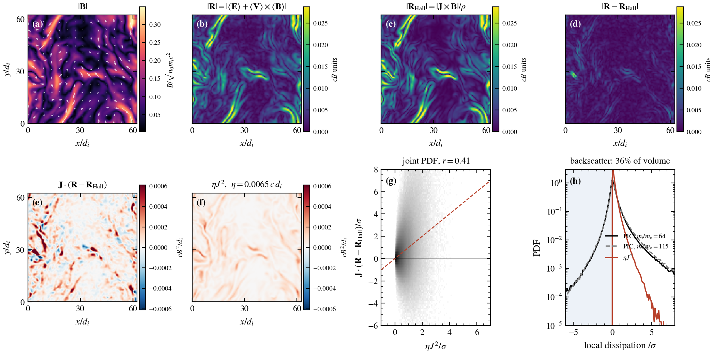
ComparedAt 1 di, the electric field MHD misses, R = ⟨E⟩+⟨V⟩×⟨B⟩ from PIC, vs the Hall term J×B/ρ; local dissipation J·(R−Hall) vs the best single resistivity ηJ². ResultHall explains ~90% of R but does no work. All field-energy dissipation is in the remainder, which is not a resistivity (36% of the volume gives energy back). This motivates learned closures as fields, not coefficients. A slip closure was then trained as an exploratory test (below).
Learned slip closure (Oct 16). The same pretrained network was trained to predict the remainder R − Hall from the fluid state, with the same training runs and pixel loss as the anisotropy closure. Scored on dissipation J·(R − Hall):
It puts the dissipation in the right places: the spatial correlation with PIC is 0.73–0.89 on unseen runs, against 0.32–0.40 for the best single resistivity.
It reproduces the share of the volume that gives energy back: 30–34%, against 34–43% in PIC.
Its total is wrong away from training: 0.23–0.47× PIC's dissipation for heavier ions, and 1.3–1.5× in the 125 di boxes. On validation times of the training runs it is within 6%.